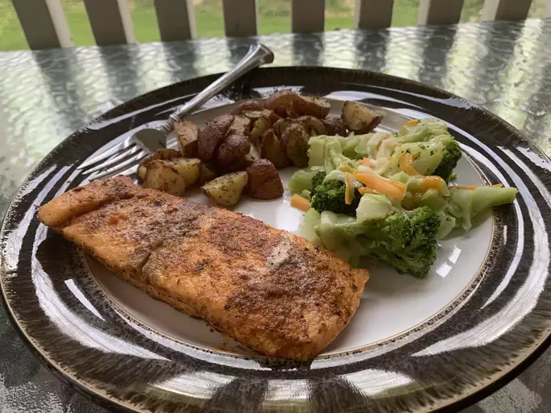

Back to home
Blackened Salmon Fillets

Fire up succulent blackened salmon with an exciting blend of Cajun-style spices!
Reviews
Great. I use 1/2 olive oil 1/2 butter. Slip season solode down on cast iron grill heated as high as you can on the bbq. Then season top before closing grill. Flip after 2 minutes and grill other side for 2 minutes.
I made this with cod and my family really liked it. I pan fried it for about 2 mins /side (each piece was about 3 inches long). It was too spicy for us and I only used 1/2 of the cayenne pepper. I think next time I will reduce the black pepper as well. Otherwise it was delicious!
Ingredients
- 2 tablespoons ground paprika
- 1 tablespoon ground cayenne pepper
- 1 tablespoon onion powder
- 2 teaspoons salt
- 0.5 teaspoon ground white pepper
- 0.5 teaspoon ground black pepper
- 0.25 teaspoon dried thyme
- 0.25 teaspoon dried basil
- 0.25 teaspoon dried oregano
- 4 salmon fillets, skin and bones removed
- 0.5 cup unsalted butter, melted
Directions
- Mix paprika, cayenne pepper, onion powder, salt, white and black pepper, thyme, basil, and oregano together in a small bowl.
- Brush salmon fillets on both sides with 1/4 cup butter, and sprinkle evenly with the spice mixture.
- Heat 2 tablespoons melted butter in a large, heavy skillet over high heat. Add salmon and cook until blackened, 2 to 5 minutes. Lift fillets, add remaining melted butter to the skillet, and flip fillets into the butter. Cook until the other side is blackened and fish flakes easily with a fork, 3 to 5 minutes.
Back to home